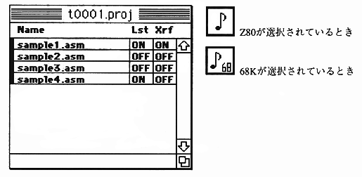
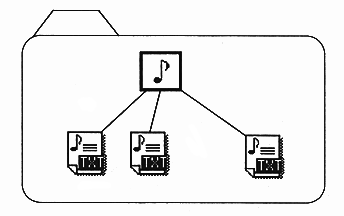

The relationship between projects and sources is shown below.

The source registered in the project must be in the same folder as the project.
The same applies to files such as headers used in the source.
Caution Be careful when moving to another machine. Of source files stored in the project Location information is not guaranteed when moving between other models. Therefore, in such cases, the program Please re-register the source in .